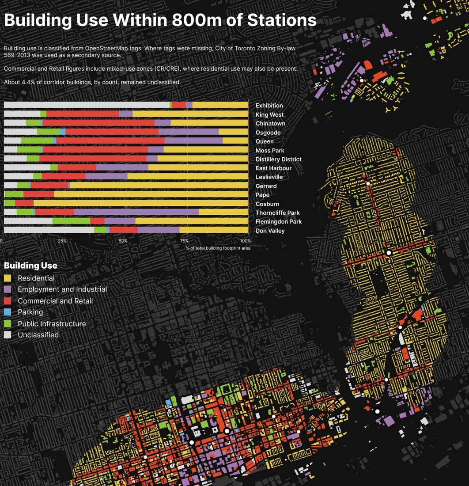
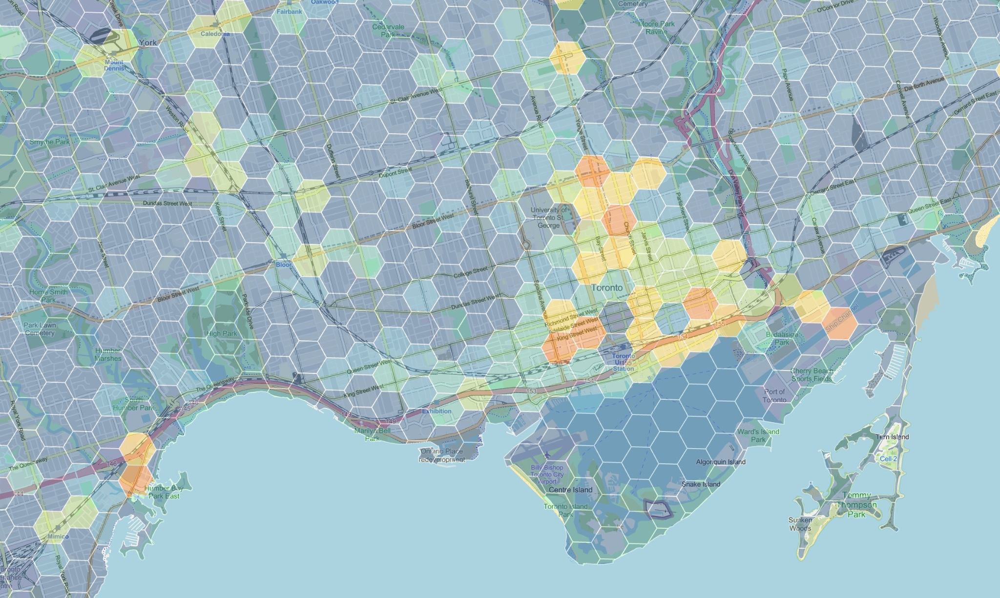
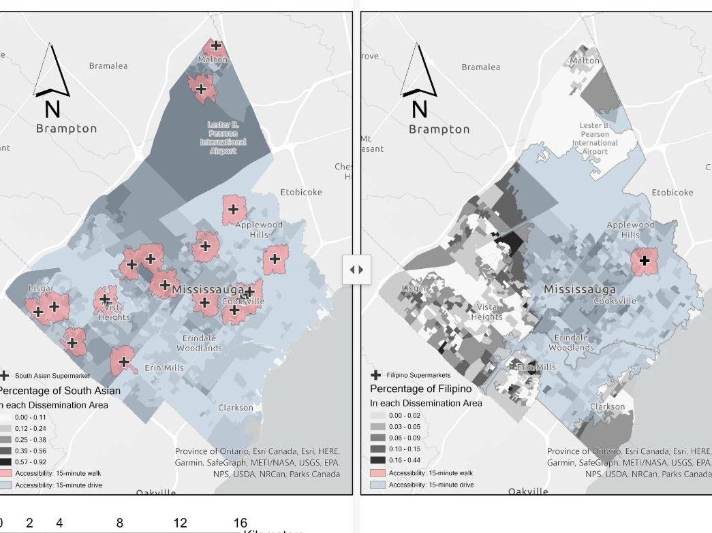
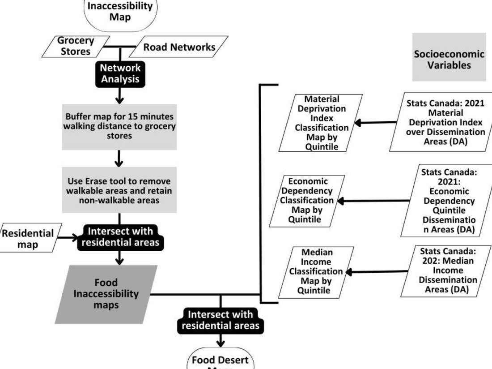
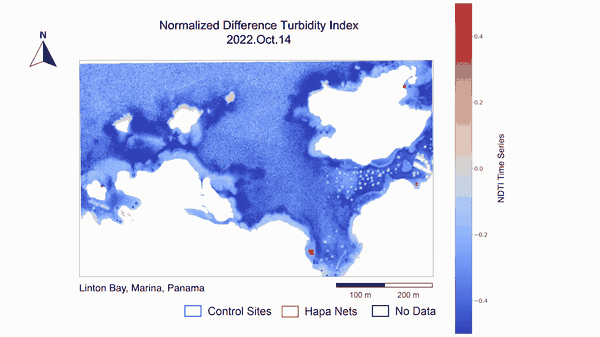
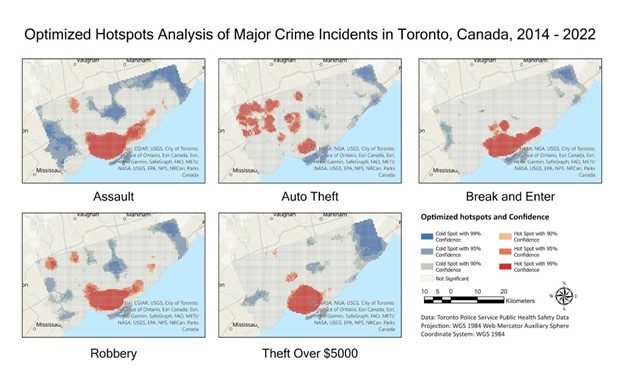

GIS · Urban Planning · Spatial Analysis
Lewei
Gao
I use spatial data, maps and urban research to explore how cities are built, accessed and experienced.
My work sits between GIS and urban planning, with a focus on clear spatial analysis and visual communication. I hold a Master of Urban Innovation from the University of Toronto and a background in GIS and Human Geography.
Selected Work
Maps, Analysis and Urban Questions.

Ontario Line
An exploratory GIS project comparing building use and height within 800 metres of 15 Ontario Line stations.

What is “Good Growth” in Toronto?
A capstone StoryMap prototype examining how housing growth can be communicated through permits, policy context and station area data.

Subway Map: Shijiazhuang
A transit map based on the Shijiazhuang Rail Transit Network Plan for 2021 to 2035.

The Food Desert in Mississauga
A GIS investigation of fresh food access using network analysis, socioeconomic indicators and field collected food price data.

Identifying Food Deserts in Mississauga
Peer-reviewed research combining walking accessibility and socioeconomic indicators to identify food desert areas in Mississauga.

Sea Cucumber Farming Sustainability
An environmental assessment combining water sampling and PlanetScope imagery at an open ocean sea cucumber farm in Panama.

Spatial Analysis of Crime in Toronto
A spatial analysis project examining the distribution and clustering of reported crime in Toronto.